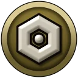

Bots
How computer players draft and spend.
A match always has 8 players. Every seat that no person takes in the lobby is played by a bot, a computer player. Bots buy from the same shop, draw on the same shared pool, earn the same gold and lose the same health as you do. They are not given better odds, more gold or sight of your board. This page says exactly how they decide.
Which seats are bots
A new lobby is filled with bots as soon as its first player arrives. Each person who joins replaces one bot, and a person who leaves the lobby hands the seat back to a new bot. When the match starts, whatever bots remain play it to the end. A bot never takes over the seat of a person who disconnects during a match: that seat stays with its player.
A match holds at most 7 bots, so a lobby of one person plays against 7 bots.
Each bot has one of 4 personalities, dealt out in turn around the table from a random starting point, so a match with several bots has a mix of them. A bot's name is its personality followed by a number, for example Steady Banker 1, so you can tell from the scoreboard how each one plays.
Personalities
| Personality | Gold it keeps | Stops rerolling at | Level it aims for | Highest level it buys | Highest tier it starts | Alliances | Panics at health | Commander style and pick |
|---|---|---|---|---|---|---|---|---|
| Steady Banker | 30 gold from round 4 | 30 gold | 3 from round 1, 4 from round 4, 5 from round 7, 6 from round 10, 7 from round 13, 8 from round 17, 9 from round 21, 10 from round 25 | 10 | Tier 5 | 1 favourite, +2 per alliance already owned | 30 | Economy, Defence Always takes Fizzwick Emberhorn, Bombardier |
| Early Brawler | 10 gold from round 6 | 20 gold | 4 from round 1, 5 from round 3, 6 from round 6, 7 from round 9, 8 from round 13, 9 from round 18, 10 from round 23 | 10 | Tier 5 | 1 favourite, +1.5 per alliance already owned | 40 | Offence, Tank Always takes Brugg Ironjaw, Barrel Roller |
| Hyper Roller | 20 gold from round 3 | 12 gold, then 20 from round 3 | 3 from round 1, 4 from round 6, 5 from round 9, 6 from round 12, 7 from round 18, 8 from round 24 | 8 | Tier 3 | 1 favourite, +1 per alliance already owned | 50 | Tempo, Offence Always takes Pip Quickfingers, Brawler |
| Alliance Devotee | 30 gold from round 5 | 30 gold | 3 from round 1, 4 from round 4, 5 from round 6, 6 from round 9, 7 from round 12, 8 from round 16, 9 from round 20, 10 from round 24 | 10 | Tier 5 | 2 favourites, +4 per alliance already owned | 35 | Support, Sustain Always takes Vey the Pactbinder, Thrall Binder |
- Gold it keeps: the reserve the bot will not spend below, once the given round is reached. Before that round it has no reserve. The reserve is what earns interest.
- Stops rerolling at: the bot does not reroll when that would leave it with less gold than this. The figure is the higher of the personality's reroll floor and its reserve, so it steps up in the round the reserve begins. At or below its panic health the bot ignores both and rolls down to 4 gold. See rerolling.
- Highest tier it starts: the bot never buys the first copy of a unit above this tier. It still buys further copies of a unit it already owns.
- Alliances: each bot draws its favourite alliances at random from all of them when it is created, so two bots of one personality usually chase different alliances. No personality is tied to a fixed alliance.
- Panics at health: at or below this health the bot drops its reserve and spends almost everything.
- Commander style: the kinds of commander, build and talent the bot prefers. Every bot is offered every commander and build, so a personality with one clear best match takes the same commander and build in every match. See how a bot picks its commander.
Any of these can be a bot's favourite:  Feral
Feral Abyssal
Abyssal Ashen
Ashen Scrapkin
Scrapkin Spireborn
Spireborn Drowned
Drowned Oathbound
Oathbound Riftborn
Riftborn Mirefolk
Mirefolk WightStonebornThornkin
WightStonebornThornkin Warden
Warden Bulwark
Bulwark Cutthroat
Cutthroat Stalker
Stalker Arcanist
Arcanist Soulbinder
Soulbinder Mender
Mender Artificer
Artificer Venomist
Venomist Duelist
Duelist Sundered
Sundered Ravager
Ravager Shade
Shade Ironsight
Ironsight Grovekeeper
Grovekeeper Wyrmblood
Wyrmblood Triad
Triad ParagonWatcher
ParagonWatcher Conjurer
Conjurer
A bot's turn
A bot takes its whole turn in the instant a preparation phase begins, in this fixed order. It then waits for combat like everyone else and does nothing more until the next round.
- Take the item on offer, if a loot offer is open.
- Choose a commander and build, if that offer is open, then claim any open talents.
- Buy from the shop.
- Buy experience up to the level it aims for this round.
- Buy from the shop again, now that gold and unit cap may have changed.
- Reroll, buying after every reroll.
- Buy further levels with gold it has no other use for.
- Claim any talent the new levels unlocked.
- Arrange the board.
- Hand out items.
- Sell bench units until the bench has room again.
- Mark itself ready.
Bots do not roll dice when they choose. Given the same shop, gold and board, a bot of a given personality and favourites always does the same thing.
What a bot buys
The bot gives every unit in its shop a score and works down from the highest. Ties go to the leftmost shop slot.
| Reason | Score |
|---|---|
| The unit's tier | +1 per tier |
| Buying it completes a star upgrade (the bot holds 2 one-star copies) | +8 |
| Otherwise, the bot already owns a copy at any star | +3 |
| For each alliance of the unit that the bot already has a unit of | + the personality's alliance weight |
| For each alliance of the unit that is one of the bot's favourites | +2 |
Two kinds of unit are never bought: one the bot already owns at 3 stars, and a first copy of a unit above the personality's tier limit.
The bot buys the best-scoring unit it can afford that passes one of these tests:
- it completes a star upgrade (this ignores the reserve),
- the bot would still hold its gold reserve afterwards, or
- the bot owns fewer units, board and bench together, than its unit cap. A bot short of units spends into its reserve to fill the board.
If no unit passes, buying stops. Otherwise it buys and scores the shop again, up to 5 times in one pass, which is every slot of the shop.
When its bench is nearly full (1 slot free or fewer) and it already owns as many units as its cap, the bot first sells its weakest bench unit to make room, but only if that unit is worth less than 3 times the new unit's score. If not, it stops buying. A purchase that completes a star upgrade skips this step.
How a bot values its units
To compare units it already owns, for the board and for selling, the bot uses a second score:
- 3 times the unit's strength, where strength is its tier plus 2 for each star above the first (the same measure player damage uses);
- plus 0.5 for each other different unit the bot owns that shares an alliance with it, counted per alliance;
- plus 0.5 for each of its alliances that is a favourite.
When choosing what to sell from the bench, a unit that has a twin (another copy at the same star) counts as 6 more valuable, so pairs working towards an upgrade are kept. Bots sell only from the bench, never from the board.
Saving, rerolling and levelling
Three numbers of the personality steer its gold: the reserve, the reroll floor and the panic health.
- Before the personality's reserve round, the reserve is zero.
- From that round on, the reserve is the personality's figure.
- At or below the panic health, the reserve becomes 4 gold whatever the round.
Rerolling
After its first two buying passes the bot rerolls, and buys from each new shop as above. It stops when the next reroll would leave it under the higher of its reroll floor and its reserve (when panicking, under 4 gold), or after 12 rerolls. A free reroll is always used, since it costs nothing. The bot does not wait for a particular unit: while it has gold above its floor, it rerolls. See the shop for what a reroll costs.
Levelling
Each personality has a level it aims for by a given round (the table above), capped by the highest level it will buy. While below that level the bot buys experience (5 gold for 5 experience) for as long as it can pay. Once its reserve is in force, it will not dip into the reserve for this unless a single purchase finishes the level.
After rerolling it looks again. Now it also buys levels beyond its aim, up to the personality's highest level, as long as it would keep the larger of its reserve and 30 gold (the gold that earns full interest) plus the price of one more purchase. See Levels and experience.
How a bot places units
The bot takes its most valuable bench unit, by the score above, and puts it on the board. It repeats this until the bench is empty or nothing more improves the board.
- While the board holds fewer units than the unit cap, the unit goes to an empty cell: melee units (attack range of 1 cell) to the front row, ranged units to the back row, the middle columns first. When a row is full the next row is used.
- Once the board is at the cap, the bench unit trades places with the least valuable board unit, but only if it is worth strictly more.
That is all the positioning a bot does. It does not move units already on the board, protect a carry, spread out against area damage or react to the opponent it is about to face. Its commander stays where it was placed. See Board and bench.
Last, it sells its least valuable bench units until 1 bench slot is free, so the next round's purchases have somewhere to go.
How a bot picks and uses items
From a loot offer the bot takes the choice with the highest score, the leftmost on a tie. Every choice in one offer is of the same tier, so tier never decides between them: the bot picks by the kind of item. The score also adds 10 for each tier of the item, which changes nothing for the same reason. It never rerolls the offer.
| Reason | Score |
|---|---|
| Global item, up to round 8 | +4 |
| Global item, later | +1 |
| Offensive item | +3 |
| Defensive item, with a melee unit or its commander on the board | +3 |
| Defensive item, with neither on the board | +1 |
| Support item | +2 |
That gives a fixed order of preference. Up to round 8: global (+4), then offensive and defensive with a melee unit or its commander on the board (+3), then support (+2), then defensive with neither on the board (+1). After round 8: offensive and defensive with a melee unit or its commander on the board (+3), then support (+2), then global and defensive with neither on the board (+1).
The test for a defensive item counts every melee unit on the board, and the bot's commander always counts as melee for it, whatever its real attack range. So once a bot has its commander, a defensive item always scores the higher figure.
Items in its inventory are then handed out one at a time. Global items need no holder. For each other item the bot looks at the board units that hold nothing yet, its commander included, and that the item allows (melee only, ranged only, or only units with an ability to cast). Each gets a score of 2 times its strength (tier plus 2 per star above the first), plus 3 when the item suits it: a defensive item on a melee unit, any other item on a ranged unit. The best scorer gets the item.
If an item has no unit that can take it, because every unit it allows already holds one, the bot stops there and keeps the rest of its inventory for a later round, even an item further along that would have fitted a unit.
A bot never takes an item back off a unit and never sells one.
How a bot picks its commander
When the commander offer opens, the bot scores every commander and build in it against its personality's commander style: 2 for each of the commander's tags that matches, plus 1 for each of the build's tags that matches. It takes the highest score. On a tie it keeps the first one it looked at: the commander shown earlier in the offer, and for one commander the first of its builds.
Talents are chosen the same way: the option with the most matching tags, the first one on a tie. The bot claims every talent as soon as it is offered. See the commanders and the talent list.
Limits each preparation phase
- Actions in one preparation phase
- 60 (every purchase, sale, reroll, level, move, pick and item it attempts counts as one, whether or not it goes through, and so does marking itself ready)
- Rerolls in one preparation phase
- 12
- Purchases in one buying pass
- 5
- Bench slots kept free
- 1
- Gold kept when panicking
- 4
When a bot runs out of actions its turn simply ends where it is. Because refused attempts count, that can come sooner than a count of what it achieved suggests. In a busy round that can leave units on the bench or items unassigned. Anything left open is then settled the way it is for any player when the fight starts.
Same rules as players
Every bot action goes through the same checks as a player's tap. A bot pays the same prices, gets the same shop odds at its level, the same income, interest and streak gold from the economy, the same unit cap, and takes damage the same way. It draws units from the shared pool, so a bot collecting a unit leaves fewer copies for you. It is matched against opponents by the same matchup rules and can be met as a ghost like anyone else.
The differences that do exist are about timing and attention, not advantage:
- A bot acts once, at the very start of preparation, and cannot respond to anything after that.
- A bot's ready mark does not count. Combat starts early when every connected person is ready; the bots are always ready and are ignored for that.
- A bot uses only part of what a player can do. It never locks its shop, never rerolls a loot offer, never sells or rearranges units on the board, and never moves an item once given.
- A bot has a cap on actions and rerolls each round, listed above. A player has only the clock.
- When no person is left alive in a match, or all of them have been away too long, the bots play the rest of it out at full speed with no timers. See disconnecting during a match and playing again.